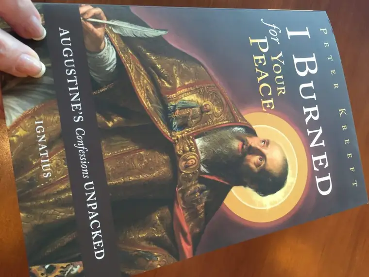

I’ll admit it it. I’m a sucker for truth. Okay, let me say that a slightly different way. I am drawn passionately toward Truth. With a capital T.
A couple weeks ago, I wrote about one of the three transcendentals that brings us to the Church. I began with goodness, I think because our world seems to be so thirsty for goodness. Goodness is all around, and yet somehow it eludes us. We’re not always drawn toward it and yet we need it like water. On those occasions we do catch sight of it, it brings us to our knees.
The other day, a dear friend reminded me of this song, “Good, Good Father,” by Chris Tomlin and before I leave goodness for the next draw of the faith, I need to just share it, because it’s true and beautiful: https://youtu.be/CqybaIesbuA
See? It’s so hard to talk about one transcendental without mentioning the other. They are like the Trinity. They all fit together.
But each does deserve its own time in the limelight of love. If I had to choose one thing that drew me more assuredly into the Church — the thing that pulled me in just as I was about to wander away — it would be this Truth. As I looked around at all of the possibilities, at all of the arguments, all of the pleas, I yearned for the SOLID thing; the thing that I could count on without fail. The Rock. The firm thing that would not elude me, would not let me down.
When I realized, for instance, that Peter was the first pope, my world was rocked. I’d been brought up Catholic, but had missed so many of the fundamentals of our faith. I didn’t understand that our family had come from a long line of faithful believers who had drawn to the bosom of the Church in large part because of its solid foundation. And the whole papal line of succession was just the beginning. Bumping into further truths compelled me, and changed my life. Even more mind-blowing, I found them all contained and actively moving within the Church.
In the exquisite new book by Peter Kreeft, “I Burned for Your Peace,” we find a modern-day exploration of St. Augustine’s “Confessions,” and in it, St. Augustine’s thoughts on Truth. “Confessions” is a love letter to God, a prayer. It is one of God’s children probing the depths of the faith and what it means, and what God is and who he is to God.

Augustine said, “I contend not in judgment with Thee, who are the truth, and I have no will to deceive myself.”
To which Kreeft comments: “God, truth and self are all either accepted or rejected together. To contend with God is to contend with truth, and to contend with truth is to deceive yourself.” Furthermore, he says, “To love God is to love truth, and to love truth is to love God, at least implicitly.”
Put this way, it begins to make sense why the rejection of God so rampant in our world right now is also an outright rejection of truth. No wonder we are so confused. No wonder why we flail. No wonder why we cannot find the solid thing that keeps us steady and whole.
But truth isn’t just about some staunch rules or laws. It connects with something deeper that we all need, no exception: “To love God is to love yourself, since you are His child, made in His image,” Kreeft says. “and to love yourself is to love the One in whose image you are made.”
Kreeft says this “yes or no to the light of truth is the fundamental choice.” Hmmm, that seems pretty serious. “The fundamental choice.”
He goes on: “…truth came into the world specifically and particularly in Christ.”
To grasp Truth is to grasp love, then. And whom among us can do without love? Please raise your hand now. Yep, I thought so…
When St. Edith Stein (St. Theresa Benedicta of the Cross), a Jewish woman and expert philosopher who lived during WWII, and who had lost sight of God for a time, came upon the writings of St. Teresa of Avila while vacationing with a friend, suddenly, all became clear to her. “This is truth!” she proclaimed.
Specifically, she said: “I reached in at random and brought out a hefty volume. It carried the title: Life of Saint Teresa of Avila, written by herself. I began to read, was captivated immediately, and did not stop until I had read to the end. As I closed the book, I told myself: “This is Truth.” From that moment on Carmel was my goal…” –Life in a Jewish Family
From that point, all changed. She became a Christian, and later, a Carmelite nun, devoted to the salvation of all through love.
Of the three transcendentals, Truth is the one that seems, perhaps, the most unreachable. Whereas goodness and beauty seem obvious, Truth perplexes us, as it did Pontius Pilate, who remarked, “What is Truth?” (John 18:38). Our world today is behind Pilate, wondering if Truth even exists, indeed, assuming there is no ultimate, objective Truth.
But there is. And Truth is contained, as Kreeft points out, in the person of Jesus the Christ, who was sent into the world to draw us to the Father, and life eternal. Christ is the solid thing, the Rock on which we can rely, and He bestowed the earthly carrying out of this Truth to the Church.
I have not even begun to skim the surface of what Truth is in my own life, but my life has become a quest to not only understand Truth, but to love and serve Truth.
Thank you, Lord, for your Truth, that we can count on without exception. Without this Truth, we cannot function well and whole. You are a good, good Father.
Of what they think You’re like
But I’ve heard the tender whisper
Of love in the dead of night
And You tell me that You’re pleased
And that I’m never alone
It’s who You are, it’s who You are, it’s who You are
And I’m loved by you
It’s who I am, it’s who I am, it’s who I am
For answers far and wide
But I know we’re all searching
For answers only you provide
‘Cause You know just what we need
Before we say a word
It’s who You are, it’s who you are, it’s who you are
And I’m loved by you
It’s who I am, it’s who I am, it’s who I am
You are perfect in all of your ways
You are perfect in all of your ways to us